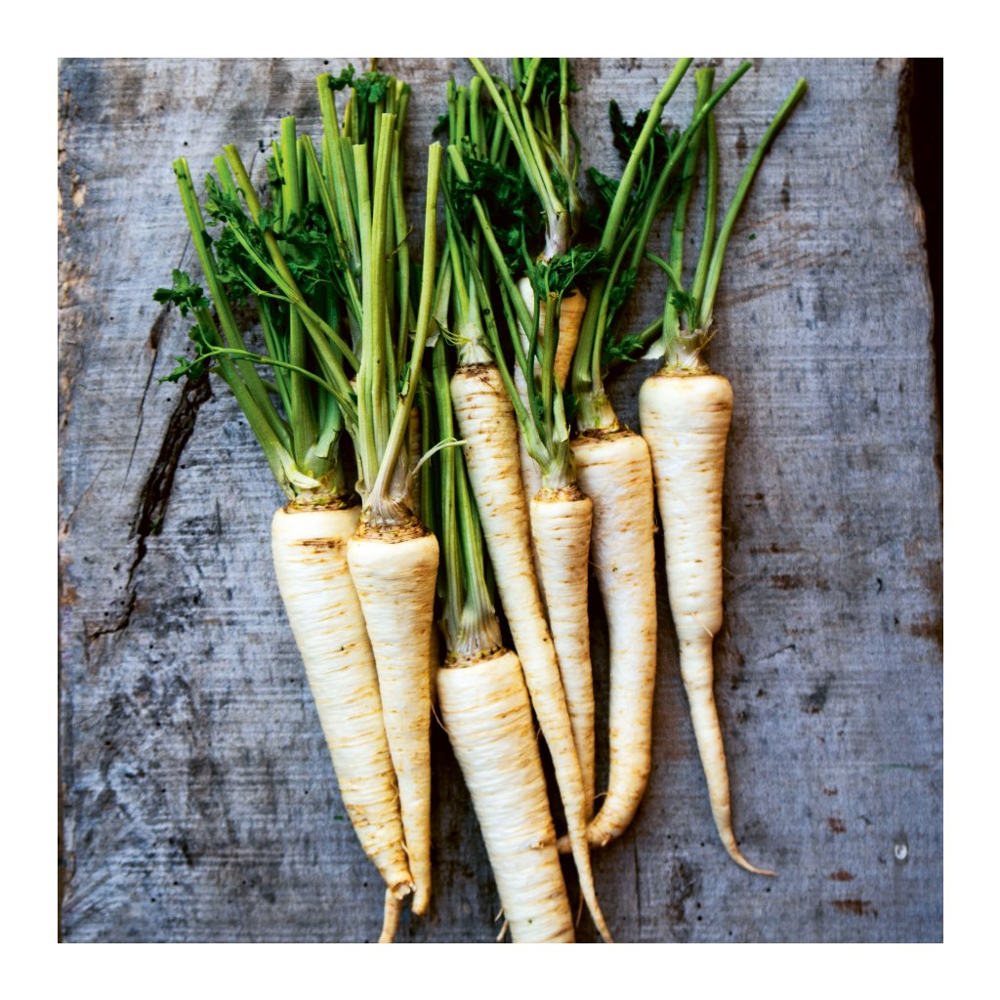

Petržel je obzvláště aromatická kořenová zelenina, která má mnohem širší využití než jen jako přísada do polévky. Petržel dočasně upadla v zapomnění, dnes si však získává stále větší oblibu – nejen kvůli tomu, že i při tepelné úpravě si uchovává své aroma. Z petržele se v kuchyni používá nejen kořen, ale i její listy. Obojí lze jíst za syrova i po tepelné úpravě. Čerstvá petržel od domácích pěstitelů je k dostání na podzim, ale v obchodech ji seženete celoročně.
2 kávové lžičky sušeného kořene zalijeme 1/4 l vroucí vody, necháme 10 minut vyluhovat, slijeme a užíváme 2x denně 125 ml při problémech s ledvinami, ledvinovými kaménky a trávením.
10 listů naťové petržele, i 1 bílého vína a 1 lžíci vinného octa vaříme 10 minut, přidáme 300 g medu a vaříme další 4 minuty. Slijeme, užíváme likérovou sklenku denně (nejlépe ráno) při angině pectoris, srdeční ischémii, arytmii a dalších nemocech srdce.
2 kávové lžičky sušeného pastináku zalijeme 1/4 l studené vody, necháme 15 minut vařit a 15 minut vyluhovat. Pijeme 2-3x denně při problémech s ledvinami, močovými kaménky nebo trávením.